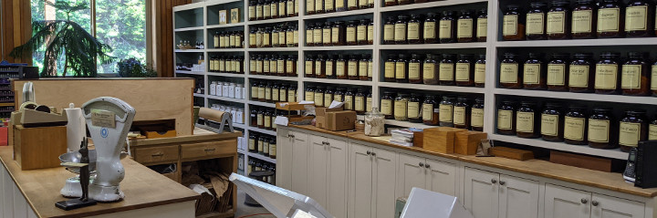

Dandelion is a family owned herbal apothecary specializing in quality botanicals. We make a special point of buying from organic and ethically wildcrafted sources when available. The brand names that we offer are those that reflect our high standards.
Join us on Facebook for the latest information, class reminders, tutorials and links